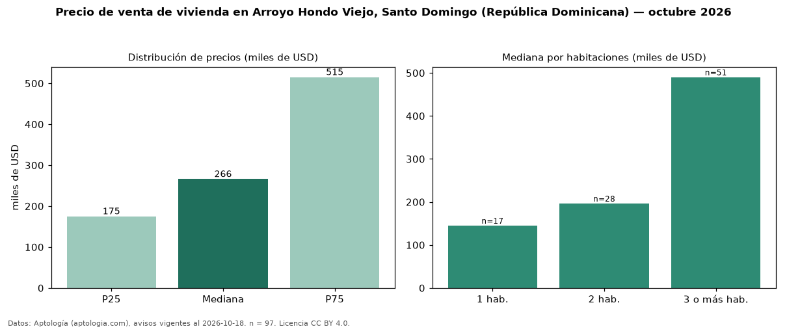

Precio de venta de vivienda en Arroyo Hondo Viejo, Santo Domingo (República Dominicana) — octubre 2026
En Arroyo Hondo Viejo, Santo Domingo (República Dominicana), la mediana de precio de venta de vivienda es USD 266.000, según 97 avisos vigentes. Por metro cuadrado, la mediana es USD 1.909/m² (n = 85 avisos con área). Por tipo: 71 % apartamentos, 29 % casas. La mitad central de los avisos va de USD 175.000 a USD 515.000 (razón 2,9), una dispersión alta. El área mediana anunciada es 138 m². El segmento con más oferta es el de 3 o más habitaciones (51 avisos, mediana USD 490.000); pasar de 1 habitación a 3 o más habitaciones cambia la mediana +238 %. Datos: Aptología (aptologia.com), CC BY 4.0 — https://www.aptologia.com/do/venta/santo-domingo. Archivos: PDF, CSV con las cifras y gráfica PNG.

| Avisos únicos | 97 |
|---|---|
| Percentil 25 | COP 175.000 |
| Mediana | COP 266.000 |
| Percentil 75 | COP 515.000 |
| Mediana por m² | COP 1.909 |
Fuente: avisos vigentes de portales inmobiliarios recopilados por Aptología, deduplicados (mínimo 30 avisos únicos por celda). Precios pedidos, no cerrados. Fecha: 2026-10-18.